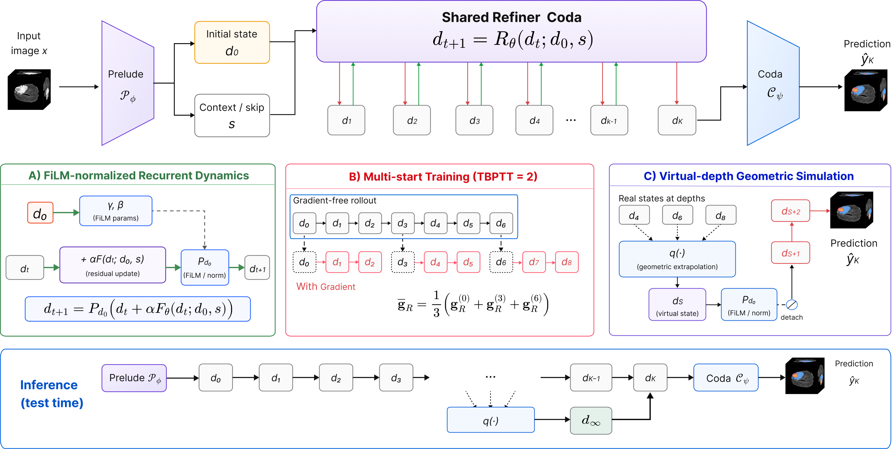
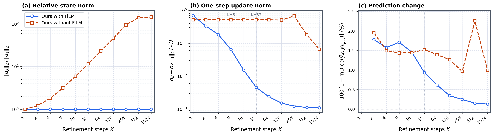
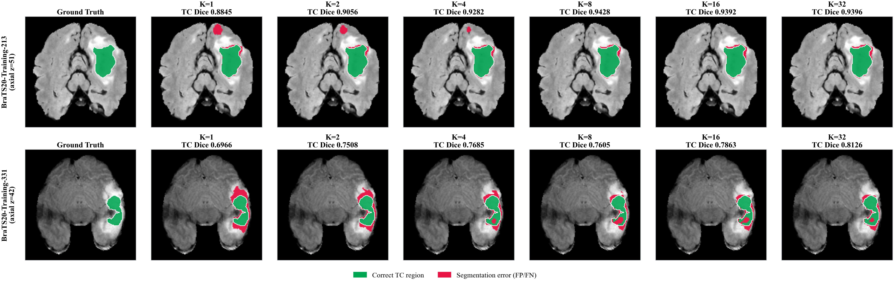

Stabilize feature statistics
FiLM normalization reuses an affine transform conditioned on the initial state, giving recurrent features a common channel-moment reference.
ICLR 2027 · Anonymous submission
Train on short trajectories. Learn to refine beyond them.
VD-Refine uses estimated late states to supervise a compact, shared Refiner—extending the useful inference depth of a single checkpoint.
Anonymous authors · Under double-blind review
Schematic of virtual-depth training
BraTS mean Dice · K = 32
Parameters · independent of depth
Real training → virtual supervision
Datasets · BraTS, LiTS, DRIVE
THE IDEA
Recurrent refinement adds computation without adding parameters. But a model trained only on early states can lose accuracy when it encounters later states at inference. We address this state mismatch with three complementary components: initial-state-conditioned FiLM normalization, supervision from multiple real starting depths, and virtual-depth supervision.
Geometric extrapolation estimates late states from a short real trajectory. Two real correction steps then turn each estimate into a supervised training example. At inference, one checkpoint supports different real rollout lengths and an optional analytic state estimate.
01 / METHOD
The Prelude encodes the image. A weight-shared Refiner updates its features. The Coda decodes the selected endpoint once.

FiLM normalization reuses an affine transform conditioned on the initial state, giving recurrent features a common channel-moment reference.
Multi-start training uses short, two-step gradient windows from several depths within an eight-step real trajectory.
Displacements between d₄, d₆, and d₈ define a geometric continuation. Estimated late starts are detached, normalized, and followed by two supervised corrections.
d̂∞ = Pd₀ [ d₈ + q / (1 − q) · (d₈ − d₆) ]
Eight real updates, then estimate and decode. The fitted-series limit is not a guaranteed fixed point.02 / RESULTS
Explore measured results on all 74 held-out BraTS volumes. Each setting uses the same historical, validation-selected checkpoint.
Markers are spaced by evaluated setting. K = 0 decodes the same model’s initial proposal; it is not the separately trained no-Refiner baseline.
32 shared Refiner updates, followed by one final decode.
| Depth | WT | TC | ET | Mean |
|---|---|---|---|---|
| K = 0 | 90.176 | 83.112 | 76.567 | 83.227 |
| K = 1 | 91.167 | 86.788 | 76.601 | 84.898 |
| K = 2 | 91.244 | 86.904 | 75.698 | 84.615 |
| K = 4 | 91.265 | 86.950 | 76.946 | 85.106 |
| K = 8 | 91.262 | 86.983 | 77.177 | 85.193 |
| K = 16 | 91.255 | 87.044 | 77.283 | 85.246 |
| K = 32 | 91.259 | 87.061 | 77.299 | 85.258 |
| 8 + analytic | 91.245 | 86.999 | 77.318 | 85.239 |
Cohort mean is the mean of per-case region means. Empty ground truth and empty prediction yield NaN, excluded within each case. ET has one NaN case at every setting except K = 2; the downloadable CSV preserves these counts.
ACROSS THREE DATASETS
Dice (%) from the manuscript’s Table 1. BraTS and DRIVE use TTA; LiTS does not.
| Model | Parameters (M) | BraTS mean | LiTS mean | DRIVE |
|---|---|---|---|---|
| nnU-Net | 31.20 | 84.59 | 77.30 | 82.21 |
| U-MambaEnc | 59.68 | 84.48 | 79.27 | 82.26 |
| U-MambaBot | 58.41 | 85.00 | 77.78 | 82.20 |
| SegResNet | 18.80 | 84.75 | 76.75 | 82.21 |
| UNeXt | 3.87 | 82.61 | 69.39 | 80.64 |
| MedNeXt-S | 5.55 | 84.98 | 76.64 | 82.19 |
| LightM-UNet | 5.02 | 83.10 | 69.27 | 81.09 |
| LiteMB-UNet (no Refiner) | 4.12 | 84.73 | 77.27 | 82.26 |
| VD-Refine · K = 32 | 4.40 | 85.26 | 79.73 | 82.32 |
| VD-Refine · 8 + analytic | 4.40 | 85.24 | 79.95 | 82.35 |
Parameter counts use the BraTS configuration. Each training configuration is evaluated from one run; these are not multi-seed averages. The public reproduction package currently covers BraTS.
LATE-DEPTH RELIABILITY
Mean case-level degradation beyond K = 8 decreases with virtual-depth supervision. The paired difference is −0.177 pp, with a 95% case-bootstrap interval of [−0.318, −0.062].
ACCURACY / COMPUTE
In a matched H100 forward-timing experiment, analytic decoding reduces latency relative to K = 32, with BraTS mean Dice of 85.239% versus 85.258%.
Timing is for a four-channel 128³ input, batch size one; it is not full-volume processing time. Parameter efficiency does not imply lower latency than every baseline.
03 / CLOSER LOOK
State dynamics complement segmentation scores. Long-rollout measurements are patch-level diagnostics, distinct from the full-volume benchmark.


04 / REPRODUCIBILITY
The BraTS package includes the model, training and inference scripts, exact cohort, evaluation rules, and reference measurements.
View the code repository ↗